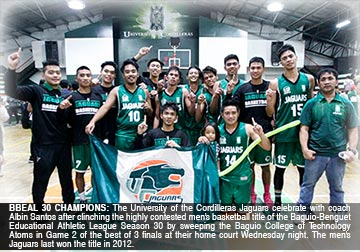

The University of the Cordilleras Jaguars swept the Baguio College of Technology Atoms in game 2 of the best of three finals clinching the most coveted and highly contested men's basketball title of the Baguio-Benguet Educational Athletic League, Wednesday night. The title will be most remembered by rookie players led by John Eric Buenaventura who took charge of the scoring spree for the Jaguars who finished the game over the Atoms, 87-82, at their home court. After the Atoms took the lead at halftime, 37-35, Buenaventura exploded with 14 points in the third quarter while his older brother and Jaguar's top scorer June Rey was in foul trouble early in the third quarter.
